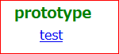

ZipHttpd
ZipHttpdドキュメント作成
ドキュメント作成ガイド
開発手順
ドキュメントを制作する手順は以下の通りです。
１．ドキュメント開発環境を用意する
まずはドキュメントの名前を決めます。
prototype.zhd を docs/{{任意の名前}}.zhd として保存します。
このガイドでは docs/test.zhd として説明してあります。
２．ZipHttpd を再起動する
再起動により static/localhost/prototype/{{任意の名前}} が作成されます。
static/ はドキュメントの内容を利用者側で差し替えるためのディレクトリです。
ここに置いたファイルはアクセス時に優先的に使用されます。
３．コンテンツを作成する
２．で作成されたディレクトリに html や画像などのコンテンツを作成します。
初期表示ページとして index.html が固定されています。
ですので、まずは index.html から作成してください。
変更したい場合は docs/{{任意の名前}}.json の docroot 項目で設定してください。
４．ブラウザで動作を確認する
コンテンツを作成したらブラウザで確認できます。
トップページの localhost - prototype - {{任意の名前}} です。

５．設定ファイルを作成する
設定ファイル ziphttpd/config.json を作成してください。
配布されたドキュメントの各種設定を提供します。
６．ディレクトリ以下を zip 圧縮する
ディレクトリ以下を zip 圧縮すると、配布できるドキュメントが完成です。
６．ドキュメントを署名する
作成したドキュメントは https で公開します。
設定ファイルの host 設定から SSL を使用して公開鍵と署名のファイルを取得します。
そして、署名が無いドキュメントがドキュメントグループにある場合は警告します。
SSL によりドキュメントの配布元の公開鍵と署名の正当性を担保するというコンセプトです。
DNS キャッシュポイズニングによるサイト偽装が脅威ですが、攻撃コスト的に見合わないだろうとの判断です。
ドキュメント配布元を狙うよりも銀行サイトなど優先度の高い攻撃目標がいくらでもあります。
以上の理由よりhost設定には、作成者が管理している WEB サーバを指定しておいてください。
署名ツールなどは、MIT ライセンスで提供予定です。
zhget では配布サイトで公開されている公開鍵で署名を確認してダウンロードします。
公開鍵の正当性を、SSL をもって担保とするコンセプトで、利用のためにドメインの取得は必須です。
ドメインの維持費以外は GCP 無料枠や Amazon S3 などを使うことでコストは月で数円程度に抑えられます。
copyright ZipHttpd.com 2020